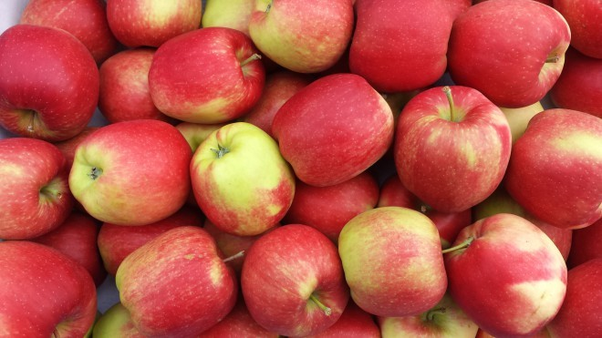

De appel (Malus domestica, synoniem Malus pumila) is een boom uit het geslacht Malus, waaraan de vooral op het noordelijk halfrond algemeen bekende handappels groeien. De appel groeit in de gematigde streken.